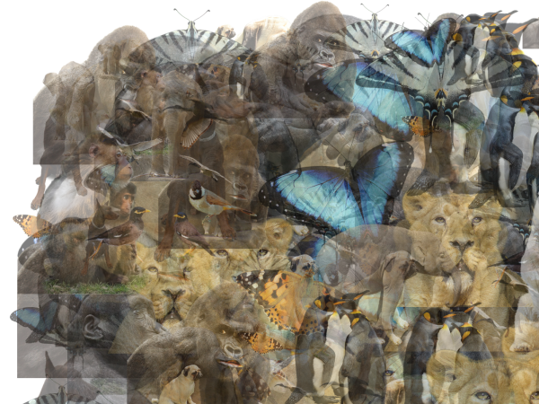

Debris - Art with Blockchain Provenance by Bəɹʤəɹɑn
I was working on my latest project - Debris Art when NFT Blockchain Digital Ownership hit the news. I instantly realized the potential impact and decided to mint some of my works in the space.

What is NFT?
NFT stands for Non-Fungible Token. It is a mechanism by which someone can “mint” (aka, list) digital media (photo, video, music, etc) on a registry and list it for sale. When an NFT (token) is generated, it is recorded on the Ethereum Blockchain. This blockchain is akin to a perpetual ledger. When an artist creates a work and mints an NFT for it, it becomes a part of the easily traceable registry. This allows the content creator to sell official digital works.
Effectivly, much the way there exist forgeries or copies of the Mona Lisa, there is only one original. NFTs enable Electronic Art to have provenance which can be traced and the work itself can be authenticated.
NFTs bring this functionality to the digital art creation world. The potential impacts of NFT technology have yet to bear out fully, however, much the way Bitcoin was an uncertain technology, it’s value has been established. Blockchain technology has expanded into unforseen realms and continues to change the way transactions, business contracts and human technology interaction occur. I believe we are still at the blockchain infancy stage and I do not forsee crytpocurrency, blockchain ledgers or NFTs going away any time soon.
Feel free to peruse the gallery of sample works and if you’re bleeding edge and if you want an original - place a bid.

Debris - Art with Blockchain Provenance by Bəɹʤəɹɑn